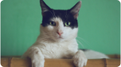
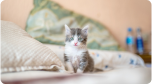

Os gatos são animais fascinantes e cercados de mistérios. De
temperamento independente e misterioso, esses felinos são conhecidos
por sua agilidade, elegância e um comportamento muitas vezes
imprevisível. Contudo, recentemente, uma teoria tem ganhado espaço na
internet e entre teóricos de conspiração: seriam os gatos astronautas?
A teoria sugere que os gatos não são animais terrestres, mas sim seres
extraterrestres enviados para realizar uma missão específica em nosso
planeta. Há relatos históricos que apontam para o fato de que os gatos
eram considerados seres sagrados em diferentes culturas e até mesmo
associados a figuras divinas. Isso poderia indicar que os gatos têm
uma origem muito mais mística do que se pensava anteriormente.
Além disso, há teóricos que acreditam que os felinos possuem
habilidades telepáticas e são capazes de se comunicar com outras
espécies alienígenas. Essa crença baseia-se em relatos de pessoas que
afirmam terem visto gatos reagindo a estímulos que não são
perceptíveis aos seres humanos, ou até mesmo se comportando de maneira
incomum durante eventos astronômicos, como uma aurora boreal. Esses e
outros indícios foram interpretados como sinais de que os gatos seriam
seres interplanetários.


Artigos Relacionados

Sábado preguiçoso
Descubra atividades interessantes para fazer com seu pet durante os finais de semana.

Balaio de gatos
Como evitar confusões entre seus gatíneos e acostumá-los desde filhotes.
Cartela de cores
Seu gato é inverno intenso? Verão profundo? Descubra as cores que mais combinam com seu bichano.
Os gatos sentem frio?
Preparem-se para a frente fria que vem para o país da melhor maneira possível.

Conheça o Moacir
Moacir é o gatinho da semana do nosso blog. Venha conhecer sua história de superação.